용접기사 (2019-08-04 기출문제)
1과목: 기계제작법
1. 공구재료의 구비조건 중 틀린 것은?
- 인성이 작을 것
- 고온경도가 클 것
- 내마멸성이 클 것
- 마찰계수가 작을 것
(정답률: 55%)

2. 강의 제품을 가열하여 그 표면에 알루미늄을 침투시켜 표면 합금층을 만드는 방법은?
- 칼로라이징(calorizing)
- 크로마이징(chromizing)
- 실리코나이징(siliconzing)
- 세라다이징(sheradizing)
(정답률: 63%)
3. 주철과 같이 메진 재료를 저속으로 절삭할 때 일반적인 칩의 모양은?
- 경작형
- 균열형
- 유동형
- 전단형
(정답률: 39%)
4. 지름 50mm인 연강봉을 20m/min의 절삭속도로 선삭할 때 주축의 회전수는 약 몇 rpm인가?
- 100.1
- 127.3
- 440.5
- 527.7
(정답률: 48%)
5. 통과 공기량 2000cc에 대한 배기시간이 5분이었다면 통기도는 약 몇 cm/min인가? (단, 시료의 높이:5cm, 시험편의 지름:5cm, 공기압 수주로:10cm이다.)
- 10.19
- 20.19
- 30.19
- 40.19
(정답률: 27%)
6. 자유 단조에서 업세팅(upset forging)에 관한 설명으로 옳은 것은?
- 굵은 재료를 늘리려는 방향과 직각이 되게, 램으로 타격하여 길이를 늘림과 동시에 단면적을 줄이는 작업이다.
- 재료를 축 방향으로 압축하여 지름은 굵고 길이는 짧게 하는 작업이다.
- 압력을 가하여 재료를 굽힘과 동시에 길이 방향으로 늘리는 작업이다.
- 단조 작업에서 재료에 구멍을 뚫기 위해 펀치를 사용하는 작업이다.
(정답률: 46%)
7. 래핑(lapping) 가공의 특징으로 틀린 것은?
- 기하학적 정밀도가 높은 제품을 만들 수 있다.
- 미끄럼면이 원활하게 되고 마찰계수가 높아진다.
- 제품을 사용할 때 남아 있는 랩제에 의하여 마모를 촉진시킨다.
- 비산하는 랩제가 다른 기계나 제품에 부착되면 마모시키는 원인이 된다.
(정답률: 55%)
8. 일명 잠호 용접이라 하며, 입상의 미세한 용제를 용접부에 산포하고, 그 속에 전극와이어를 연속적으로 공급하여 용제 속에서 모재와 와이어 사이에 아크를 발생시켜 용접하는 것은?
- 프로젝션 용접
- 원자 수소 용접
- 서브머지드 아크 용접
- 불활성 가스 아크 용접
(정답률: 65%)
9. 방전가공에 대한 설명으로 틀린 것은?
- 비접촉식 가공방법이다.
- 가공 전극은 동, 흑연 등이 쓰인다.
- 경도가 높은 재료는 가공이 곤란하다.
- 전극 및 가공물에 큰 힘이 가해지지 않는다.
(정답률: 42%)
10. CNC선번에서 G 기능 중 G01의 의미는?
- 위치 결정
- 직선 보간
- 원호 보간
- 나사 절삭
(정답률: 40%)
11. 공작기계의 구비조건으로 틀린 것은?
- 가공능력이 클 것
- 내구력이 적을 것
- 높은 정밀도를 가질 것
- 고장이 적고 효율이 적을 것
(정답률: 61%)
12. 인발가공에서 다이구멍의 형상이 원형, 각형, 기타 형상에 단면적을 감소시켜 인발는 가공법은?
- 봉재 인발
- 관재 인발
- 선재 인발
- 롤러 다이법
(정답률: 40%)
13. 공구와 공작물 사이의 알런덤, 카보런덤 또는 탄화붕소 등의 입자를 공구에 가해진 진동으로 가공물에 충돌하여 깎아내는 가공방법은?
- 전주 가공
- 방전 가공
- 초음파 가공
- 고속 액체 제트 가공
(정답률: 52%)
14. 드릴, 단조, 주조가공 등에 의하여 이미 뚫린 구멍을 좀 더 크게 확대하거나, 표면 거칠기와 정밀도가 높은 제품으로 가공하는 공작기계는?
- 셰이퍼
- 플레이너
- 슬로터
- 보링머신
(정답률: 60%)
15. 모형을 가용성 재료로 만들고 이것에 슬러리 상태의 주형 재료를 피복하여 외형을 만든 다음 모형을 용융시켜 제거하고, 용탕을 주입하는 방법으로 로스트 왁스법이라고도 하는 주조법은?
- 다이캐스팅
- 원심 주조법
- 이산화탄소법
- 인베스트먼트법
(정답률: 49%)
16. KCN 또는 NaCN 등의 침탄제를 사용하며, 소형부품 표면처리에 유리한 표면 경화법은?
- 고체 침탄법
- 가스 침탄법
- 화염 경화법
- 액체 침탄법
(정답률: 49%)
17. 나사측정 방법 중 삼침법에 대한 설명으로 옳은 것은?
- 나사의 길이를 측정하는 방법이다.
- 나사의 골지름을 측정하는 방법이다.
- 나사의 바깥지름을 측정하는 방법이다.
- 나사의 유효지름을 측정하는 방법이다.
(정답률: 50%)
18. 공작물을 양극으로 하고 전기저항이 적은 Cu, Zn을 음극으로 하여 전해액 속에 넣고 전기를 통하면, 가공물 표면이 전기에 의한 화학적 작용으로 매끈하게 가공되는 가공법은?
- 버니싱
- 배럴가공
- 전해연마
- 워터젯가공
(정답률: 60%)
19. 200mm 사인바로 10°각을 만들려면 사인바양단의 게이지 블록 높이차는 약 몇 mm이어야 하는가? (단. 경사면과 측정면이 일치한다.)
- 34.73
- 44.76
- 49.10
- 59.70
(정답률: 45%)
20. 용접 시 발생한 잔류응력을 제거하려면 어떤 처리를 하는 것이 좋은가?
- 담금질
- 파텐딩
- 뜨임
- 풀림
(정답률: 50%)
2과목: 재료역학
21. 평면응력 상태에서 σx=1750MPa, σy=350MPa, τxy=-600MPa일 때 최대 전단응력 τman은 약 MPa인가?
- 634
- 740
- 826
- 922
(정답률: 34%)
22. 단면의 폭과 높이가 b×h이고 길이가 L인 연강 사각형 단면의 기둥이 양단에서 핀으로 지지되어 있을 때 좌굴응력은? (단, 재료의 세로탄성계수는 E이다.)
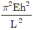
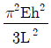
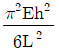
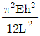
(정답률: 33%)
23. 그림과 같은 볼트에 축 하중 Q가 작용할 때, 볼트 머리부의 높이 H는? (단, d: 볼트 지름, 볼트 머리부에서 축 하중 방향으로의 전단응력은 볼트 축에 작용하는 인장 응력의 1/2까지 허용한다.)
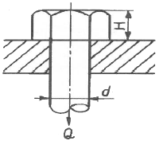
- 1/4d
- 3/5d
- 3/8d
- 1/2d
(정답률: 40%)
24. 보의 중앙부에 집중하중을 받는 일단고정, 타단지지보에서 A점의 반력은? (단, 보의 굽힘강성 EI는 일정하다.)
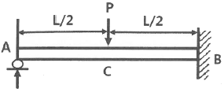
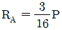
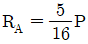
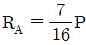
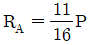
(정답률: 38%)
25. 선형 탄성 재질의 정사각형 단면봉에 500kN의 압축력이 작용할 때 80MPa의 압축응력이 생기도록 하려면 한 변의 길이를 약 몇 cm로 해야 하는가?
- 3.9
- 5.9
- 7.9
- 9.9
(정답률: 25%)
26. 그림과 같이 노치가 있는 원형 단면 봉이 인장력 P=9.5kN을 받고 있다. 노치의 응력 집중계수가 a=2.5라면, 노치부에서 발생하는 최대응력은 약 몇 MPa인가? (단, 그림의 단위는 mm이다.)
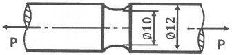
- 3024
- 302
- 221
- 51
(정답률: 43%)
27. 그림과 같이 삼각형으로 분포하는 하중을 받고 있는 단순보에서 지점 A의 반력은 얼마인가?
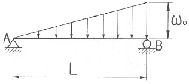
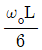
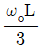
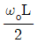
- ωoL
(정답률: 36%)
28. 지름이 50mm이고, 길이가 200mm인 시편으로 비틀림 실험을 하여 얻은 결과, 토크 30.6Nㆍm에서 전 비틀림 각이 7°로 기록되었다. 이 재료의 전단 탄성계수는 약 몇 MPa인가?
- 81.6
- 40.6
- 66.6
- 97.6
(정답률: 24%)
29. 길이가 500mm, 단면적 500mm2인 환봉이 인장하중을 받고 1.0mm 신장되었다. 봉에 저장된 탄성에너지는 약 몇 Nㆍm인가? (단, 봉의 세로탄성계수는 200GPa이다.)
- 100
- 300
- 500
- 1000
(정답률: 30%)
30. 길이가 L인 외팔보의 중앙에 그림과 같이 MB가 작용할 때, C점에서의 처짐량은? (단, 보의 굽힘 강성 EI는 일정하고, 자중은 무시한다.)
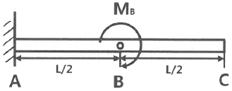
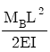
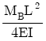
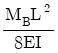
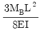
(정답률: 29%)
31. 직경 2cm의 원형 단면축을 1800rpm으로 회전시킬 때 최대 전달 마력은 약 몇 kW인가? (단, 재료의 허용전단응력은 20MPa이다.)
- 3.59
- 4.62
- 5.92
- 7.13
(정답률: 25%)
32. 길이 ℓ인 막대의 일단에 축방향 하중 P가 작용하여 인장 응력이 발생하고 있는 재료의 세로탄성계수는? (단, A는 막대의 단면적, δ는 신장량이다.)
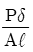
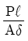
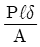
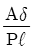
(정답률: 38%)
33. 그림과 같이 두께가 20mm, 외경이 200mm인 원관을 고정벽으로부터 수평으로 4m만큼 돌출시켜 물을 방출한다. 원관 내에 물이 가득차서 방출될 때 자유단의 처짐은 약 몇 mm인가? (단, 원관 재료의 세로탄성계수는 200GPa, 비중은 7.8이고 물의 밀도는 1000kg/m3이다.)
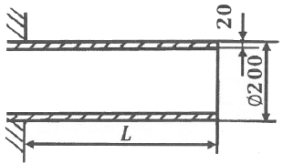
- 9.66
- 7.66
- 5.66
- 3.66
(정답률: 21%)
34. 그림과 같이 한 끝이 고정된 지름 15mm인 원형단면 축에 두 개의 토크가 작용 하고 있다. 고정단에서 축에 작용하는 전단응력은 약 몇 MPa인가?
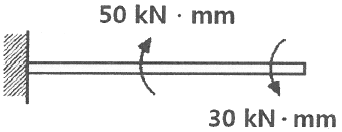
- 10
- 20
- 30
- 40
(정답률: 24%)
35. 그림과 같은 구조물의 부재 BC에 작용하는 힘은 얼마인가?
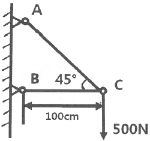
- 500N 압축
- 500N 인장
- 707N 압축
- 707N 인장
(정답률: 32%)
36. 그림과 같은 하중을 받는 단면봉의 최대 인장응력은 얄 몇 MPa인가? (단, 한 변의 길이가 10cm인 정사각형이다.)
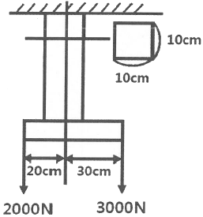
- 2.3
- 3.1
- 3.5
- 4.1
(정답률: 32%)
37. 다음과 같은 균일 단면보가 순수 굽힘 작용을 받을 때 이 보에 저장된 탄성 변형에너지는? (단, 굽힘강성 EI는 일정하다.)
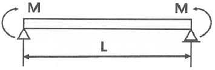
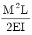
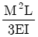
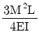
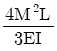
(정답률: 19%)
38. 그림과 같이 정사각형 단면을 갖는 외팔보에 작용하는 최대 굽힘응력은?
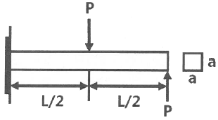
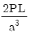
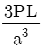
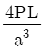
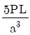
(정답률: 25%)
39. 바깥지름 d, 안지름 d/3인 중공원형 단면의 단면계수는 얼마인가?
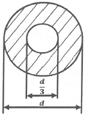
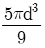
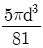
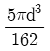
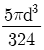
(정답률: 31%)
40. 다음과 같은 길이 4.5m의 보에 분포하중 3kN/m가 작용된다. 이 보에 작용되는 굽힘 모멘트 절대값의 최대치는 약 몇 kNㆍm인가?
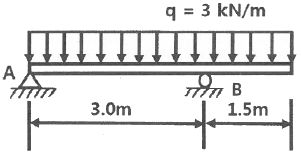
- 1.898
- 3.375
- 18.98
- 33.75
(정답률: 20%)
3과목: 용접야금
41. 일반적인 탈황반응(desulfurization reaction)에서 탈황을 촉진시키기 위한 조건으로 옳은 것은?
- 비교적 저온에서 실시한다.
- 슬래그 중의 SiO2의 함량을 높인다.
- 용융 슬래그의 염기도가 높을수록 진행하기 쉽다.
- 형석을 제거하여 슬래그의 유동성을 느리게 한다.
(정답률: 37%)
42. 다음 금속 조직 중 공정반응으로 인해 정출되는 것은?
- 펄라이트
- 트루스타이트
- 오스테나이트
- 레데부라이트
(정답률: 30%)
43. 용접부에서 발생되는 고온균열의 특징이 아닌 것은?
- 비교적 대입열량의 용접에서 발생하기 쉽다.
- 발생 시기는 대부분 응고 과정에서 일어난다.
- 용접 후 용접부의 온도가 200℃ 이하일 때 많이 발생한다.
- 균열이 용접부 표면까지 진전되면 공기와 산화 작용으로 구별이 어렵다.
(정답률: 46%)
44. 탄소당량을 설명한 것으로 옳은 것은?
- 주철의 흑연 함유량을 나타낸 것이다.
- 강재의 망강(Mn)과 규소(Si)의 비를 나타낸다.
- 보통 연강재의 탄소당량은 0.1~0.25%정도이다.
- 강재의 용접성과 관계가 있으며 이 값이 클수록 용접이 곤란하다.
(정답률: 44%)
45. 배관용 탄소 강관을 KS규격에 의한 기호로 나타낸 것은?
- SPP
- SS235
- SGT550
- SM275A
(정답률: 45%)
46. TTT 곡선의 nose time에 영향을 미치는 요소로 가장 거리가 먼 것은?
- 합금원소
- 인장성질
- 탄소함량
- 결정입도
(정답률: 40%)
47. 400℃ 이상에서 탄화물의 입계석출로 인하여 입계부식을 일으키는 스테인리스강은?
- 펄라이트계 스테인리스강
- 페라이트계 스테인리스강
- 마텐자이트계 스테인리스강
- 오스테나이트계 스테인리스강
(정답률: 42%)
48. 0.5% Si, 0.43% Mg이 함유된 알루미늄 합금으로, 내식성 및 전기 전도율이 우수하여 송정선에 많이 사용되는 것은?
- 알민
- 알드리
- 알클래드
- 하이드로날륨
(정답률: 32%)
49. 탄소강에 함유된 구리의 영향이 아닌 것은?
- 인장강도를 저하시킨다.
- 탄성한도를 증가시킨다.
- 열간 가공성을 저하시킨다.
- 부식에 대한 저항성을 증가시킨다.
(정답률: 25%)
50. 금속재료의 강화 방법이 아닌 것은?
- 고용강화
- 풀림처리
- 가공경화처리
- 입자분산강화
(정답률: 43%)
51. Fe-C 평형상태도에서 순철의 A3 변태점의 온도는?
- 723℃
- 768℃
- 910℃
- 1400℃
(정답률: 48%)
52. 용착금속에 인장강도는 증가시키나 연신율과 충격치를 저하시키며 뜨임취성의 원인이 되는 것은?
- N
- O
- H
- S
(정답률: 32%)
53. 다음 금속 조직 중 경도가 가장 높은 것은?
- 페라이트
- 펄라이트
- 마텐자이트
- 트루스타이트
(정답률: 50%)
54. 가공한 금속을 가열할 때 결정입계의 이동에 의해서 형성되는 쌍정은?
- 변형쌍정
- 풀림쌍정
- 소성쌍정
- 기계적쌍정
(정답률: 33%)
55. 강의 열처리에서 A1 변태점 이하로 가열하여 소정시간 유지한 다음 냉각하는 방법으로, 인성을 증가시키고 경도를 감소시키는 열처리는?
- 퀜칭
- 템퍼링
- 어닐링
- 노멀라이징
(정답률: 34%)
56. 강재의 용접성은 강의 열 영향부의 최고경도에 대한 탄소당량에 관계되는데 그 탄소당량은 얼마 이하에서 양호한 용접성을 가질 수 있는가?
- 0.4%
- 0.7%
- 0.9%
- 1.1%
(정답률: 45%)
57. 다음 중 용융점이 가장 낮은 금속은?
- Cu
- Fe
- Mg
- Ni
(정답률: 40%)
58. 용접부의 저온 균열이 아닌 것은?
- 토우 균열
- 루트 균열
- 비드 밑 균열
- 크레이터 균열
(정답률: 45%)
59. 용융금속이 응고할 때 응고 온도차에 따라 농도차이를 일으키는 현상은?
- 편석
- 공석
- 포석
- 편정
(정답률: 52%)
60. S-N 곡선에 대한 설명으로 옳은 것은?
- 탄소당량을 도시한 곡선이다.
- 항온변태 속도를 나타내는 곡선이다.
- 인장시험에서 인장력과 연신율을 나타내는 곡선이다.
- 피로시험에서 응력과 반복횟수를 나타내는 곡선이다.
(정답률: 38%)
4과목: 용접구조설계
61. 아래보기자세 및 수평필릿 용접에 사용되고 많은 철분을 함유하고 있어 그래비티 용접(gravity welding)에 주로 사용되는 용접봉은?
- E4327
- E4311
- E4313
- E4316
(정답률: 37%)
62. 맞대기 용접이음이나 필릿 용접이음의 각 변형을 교정하기 위하여 이용되는 가열법은?
- 점 가열법
- 격자 가열법
- 선상 가열법
- 쐐기 모양 가열법
(정답률: 49%)
63. 용접 설계 시 고려해야 할 사항으로 옳은 것은?
- 판재가 두꺼운 용접에서는 X형 홈보다는 V형 홈을 이용하는 것이 좋다.
- 단속필릿 용접 이음의 경우 다리 길이를 길게 하고 용접 길이를 짧게 하는 것이 좋다.
- 보강재나 격판과 같은 것을 사용하여 용접량이나 용접 길이를 늘린다.
- 용접이음에 걸리는 하중이 작거나 없을 때는 연속필릿 용접이음보다 단속필릿 용접이음이 비용이 절감된다.
(정답률: 40%)
64. 일반적인 용접 이음 설계 시 주의사항으로 옳은 것은?
- 용착금속량이 많은 홈 형상을 선택하여 설계한다.
- 맞대기 용접에는 이면 용접을 할 수 있도록 해서 용입 부족이 없도록 설계한다.
- 맞대기 용접을 피하고 될 수 있는 한 필릿 용접을 많이 하도록 설계한다.
- 용접선은 될 수 있는 한 교차되도록 하고 이음부는 한쪽으로 집중되게 설계한다.
(정답률: 48%)
65. 용접 시공 시 용접 순서에 대한 설명으로 적합하지 않은 것은?
- 리벳 이음과 병용하는 경우는 용접 이음을 먼저 한다.
- 동일한 평면 내에 많은 이음이 있을 때 수축은 중앙으로 모이게 한다.
- 가능한 수축이 큰 이음을 먼저 용접하고 수축이 적은 이음은 다음에 한다.
- 용접선의 직각 단면 중심축에 대하여 수축력의 합이 “0”이 되도록 한다.
(정답률: 43%)
66. 용접 작업에서 용접 지그를 선택하는 기준으로 적절하지 않은 것은?
- 작업 능률이 향상되어야 한다.
- 변형을 억제할 수 있는 구조여야 한다.
- 피용접물과의 고정과 분해가 어려워야 한다.
- 용접작업을 용이하게 할 수 있는 구조여야 한다.
(정답률: 55%)
67. 접합하려는 두 부재를 겹쳐 놓고 한쪽의 부재에 둥근 구멍을 뚫고 그곳을 용접하는 것은?
- 필릿 용접
- 플러그 용접
- 플레어 용접
- 변두리 용접
(정답률: 54%)
68. 용접부 결함의 종류 중 구조상의 결함이 아닌 것은?
- 변형
- 기공
- 균열
- 언더컷
(정답률: 41%)
69. 각 층마다 전체의 길이를 용접하면서 쌓아올리는 용착방법은?
- 대칭법
- 비석법
- 전진법
- 빌드업법
(정답률: 53%)
70. 다음 초음파 탐상법의 종류 중 시험체 내에 초음파 펄스를 보내어 내부 또는 저면에서 생기는 반사파를 탐지하여 내부의 결함을 탐상하는 방법은?
- 공진법
- 투과법
- 펄스 반사법
- 에코 통전법
(정답률: 53%)
71. 완전 용입된 맞대기 용접의 길이가 150mm이며 강판의 두께 t는 20mm일 때, 굽힘 응력은 약 몇 MPa인가? (단, 굽힘모멘트 Mb는 0.83kNㆍm이다.)
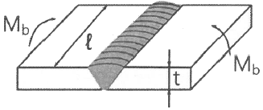
- 73
- 83
- 93
- 103
(정답률: 31%)
72. 용접번형에 영향을 미치는 인자 중 변형을 억제하는 인자에 해당하는 것은?
- 용전전류
- 용접 층수
- 가용접의 크기와 피치
- 용접봉의 종류와 크기
(정답률: 47%)
73. 방사선투과검사에서 투과도계의 역할은?
- 결함의 크기를 조정하는 게이지
- 명암도를 자동으로 조절하는 게이지
- 필름의 질을 향상시키기 위한 게이지
- 방사선투과 사진상의 질을 평가하기 위한 게이지
(정답률: 37%)
74. 용접에 의한 수축 변형 방지법 중 굽힘 변형을 방지하기 위한 방법으로 틀린 것은?
- 역변형을 주거나 구속 지그로 구속한 후 용접한다.
- 개선 각도는 용접에 지장이 없는 범위에서 작게 한다.
- 판 두께가 얇은 경우 첫 패스 측의 개선 깊이를 크게 한다.
- 허용 범위에서 봉의 지름이 작은 것으로 시공하여 패스 수를 늘린다.
(정답률: 44%)
75. 세로 비드 노치 굽힘 시험법으로 용접하지 않은 모재를 시험할 수 있는 장점이 있으며, 용접부의 연성이나 균열을 조사하는 시험은?
- 킨젤 시험
- 슈나트 시험
- 카안 인열 시험
- 샤르피 충격 시험
(정답률: 43%)
76. 용접의 시점과 종점 부분의 용접 결함을 방지하기 위해서 동일한 재질이나 형상의 재료를 붙인 보조판은?
- 백킹
- 와이어
- 엔드탭
- 용접지그
(정답률: 50%)
77. 넓은 루트면이 있고 이면 용접된 V형 맞대기 용접을 나타내는 기호는?
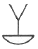
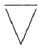
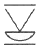
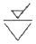
(정답률: 37%)
78. 아크 용접을 할 때 최초로 아크를 발생시키는 것 또는 모재표면에 순간적으로 아크를 발생시켰다가 끊는 조작으로 생기는 모재 표면상의 결함을 무엇이라고 하는가?
- 아크 쳄버
- 델라이네이션
- 아크 브레이징
- 아크 스트라이크
(정답률: 48%)
79. 용접부의 잔류응력을 제거하기 위한 방법이 아닌 것은?
- 피닝법
- 고온 응력 완화법
- 저온 응력 완화법
- 기계적 응력 완화법
(정답률: 32%)
80. 브리넬 경도 시험에 사용되는 압입자의 지름으로 틀린 것은?
- 1mm
- 5mm
- 10mm
- 20mm
(정답률: 37%)
5과목: 용접일반 및 안전관리
81. 용접물을 겹쳐서 용접 팁과 하부 앤빌 사이에 끼워 놓고 압력을 가하면서 원자가 서로 확산되어 압접하는 방식으로, 금속판은 0.01~2mm, 플라스틱은 1~5mm 정도의 얇은 판 용접이 가능한 압접법은?
- 마찰 용접
- 냉간 압접
- 레이저 용접
- 초음파 용접
(정답률: 36%)
82. 탄산가스 아크 용접에서 와이어 송급 시 아크 길이를 자동으로 자기 제어할 수 있는 특성은?
- 부특성
- 상승특성
- 수하특성
- 전압회복특성
(정답률: 29%)
83. 판 두께 0.8~1.2mm의 연강판을 점(spot)용접 할 경우 최소 피치로 가장 적당한 것은?
- 3~7mm
- 8~11mm
- 12~23mm
- 24~35mm
(정답률: 27%)
84. 일반적인 마찰교반용접의 특징으로 틀린 것은?
- 기공이나 균열이 발생하지 않는다.
- 이음부 갭의 허용 범위가 아크용접에 비해 작다.
- 모든 알루미늄 합금을 융접 이하의 저온에서 접합할 수 있다.
- 모서리 용접에 많이 활용되며 이음부 구조를 자유롭게 할 수 있다.
(정답률: 28%)
85. 피복 아크 용접 시 용접기의 1차 입력이 25kVA일 때 용접기의 1차 측에 설치할 안전 스위치에 몇 A의 퓨트를 붙이는 것이 가장 적합한가? (단, 이 용접기의 입력 전압은 200V이다.)
- 80A
- 100A
- 125A
- 150A
(정답률: 42%)
86. 산소 및 아세틸렌 용기 취급 시 주의사항으로 틀린 것은?
- 아세틸렌 용기는 반드시 세워서 사용한다.
- 산소 용기 내에 다른 가스를 혼합하지 않는다.
- 산소 용기 운반 시에는 반드시 보호 캡을 씌워서 이동한다.
- 아세틸렌가스에 사용한 조정기, 호스를 그대로 산소가스에 재사용한다.
(정답률: 52%)
87. 다음 중 기온과 습도의 상승작용에 의하여 느끼는 감각 정도를 측정하는 척도는?
- 감각온도
- 불쾌지수
- 상승지수
- 선행기온지수
(정답률: 53%)
88. 이산화탄소 아크 용접 시 건강에 가장 나쁜 영향을 미치는 것은?
- 복사에너지에 의한 질식
- 탄소의 축적에 의한 질식
- 질소의 축적에 의한 중독 작용
- 이산화탄소의 축적에 의한 질식
(정답률: 54%)
89. 남땜의 용제가 갖추어야 할 조건으로 틀린 것은?
- 청정한 금속면의 산화를 촉진할 것
- 남땜 후 슬래그의 제거가 용이할 것
- 모재나 땜납에 대한 부식작용이 최소일 것
- 모재의 산화 피막과 같은 불순물을 제거하고 유동성이 좋을 것
(정답률: 53%)
90. 다음 용접법 중 용착 효율이 가장 낮은 것은?
- 피복 아크 용접
- 플럭스 코어드 아크 용접
- 불활성 가스 금속 아크 용접
- 불활성 가스 텅스텐 아크 용접
(정답률: 46%)
91. 가스 용접 시 이상 현상으로 역류가 발생했을 때, 방지대책으로 틀린 것은?
- 산소를 차단시킨다.
- 팁을 깨끗이 청소한다.
- 안전기와 발생기를 차단시킨다.
- 아세틸가스 분출속도를 높인다.
(정답률: 50%)
92. 가스 실드계의 대표적인 용접봉으로 셀룰로오스(유기물)를 20~30% 정도 포함하고 있는 연강용 피복 아크 용접봉은?
- E4301
- E4311
- E4313
- E4316
(정답률: 30%)
93. 압력조정기의 구비 조건으로 틀린 것은?
- 동작이 예민해야 한다.
- 빙결되지 않아야 한다.
- 조정압력과 방출압력의 차이가 커야 한다.
- 조정압력은 용기 내의 가스량이 변화하여도 항상 일정해야 한다.
(정답률: 54%)
94. 일반적으로 가스용접 시 모재 두께가 1mm이상일 때, 용접봉의 지름을 결정하는 계산식으로 옳은 것은? (단, 용접봉 지름:D(mm), 모재 두께:T(mm))
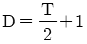
(정답률: 43%)
95. 직류 아크 용접기를 사용하여 용접할 경우 극성을 주의하여야 한다. 이 때 용접봉에는 (-)극을 연결하고, 모재에는 (+)극을 연결하는 것은?
- AC
- 정극성
- 역극성
- DCRP
(정답률: 47%)
96. 용접의 분류에서 융접에 속하지 않는 것은?
- 스터드 용접
- 프로젝션 용접
- 피복 아크 용접
- 서브머지드 아크 용접
(정답률: 41%)
97. 토치의 팁 대신 안지름 3.2~6mm, 길이 1.5~3m 정도의 강관에 산소를 공급하여 그 강관이 산화 연소할 때의 반응열로 금속을 절단하는 방법으로, 두꺼운 강판의 절단이나 주철, 강괴 등의 절단에 사용되는 절단법은?
- 분말 절단
- 산소창 절단
- 가스 가우징
- CNC 자동 절단
(정답률: 53%)
98. 교류 아크 용접기와 직류 아크 용접기의 비교 설명으로 틀린 것은?
- 직류 아크 용접기의 구조는 교류 아크 용접기의 구조보다 복잡하다.
- 직류 아크 용접기의 전격위험은 교류 아크 용접기의 전격위험보다 적다.
- 교류 아크 용접기의 역률은 직류 아크 용접기의 역률보다 양호하다.
- 교류 안크 용접기의 무부하 전압은 직류 아크 용접기의 무부하 전압보다 높다.
(정답률: 30%)
99. 이산화탄소 아크 용접 시 이산화탄소 가스에 산소를 1~5% 정도 혼합하였을 때 나타나는 효과로 가장 거리가 먼 것은?
- 용입이 감소한다.
- 용착금속이 청결해진다.
- 용융지의 온도가 상승한다.
- 슬래그 생성량이 많아져 비드 표면을 균일하게 덮어 외관이 개선된다.
(정답률: 35%)
100. 피복 아크 용접봉의 피복 배합제 성분 중 탈산제가 아닌 것은?
- 규소철
- 망간철
- 산화티탄
- 알루미늄
(정답률: 35%)